- Overview
- Applying a Skin
- Available Skins
- Other Skins
- Changing the skin
- Creating Skins
- Importing and Exporting Skins
- Removing Skins
- Configuring Skins by Workspace
- Modifying Skins
- HTML Skin Files
- CSS Skin Files
- Common ProcessMaker Classes
- Modifying CSS for Specific Dynaform elements
- Editing style.css
- Editing form.css
- Image Files
- Modifying Loading Page View
- Switching to a Different Skin
Overview
Skins provide the visual appearance to the ProcessMaker interface. By default, ProcessMaker 2.5.x provides the "neoclassic" skin for a standard blue/grey interface. In addition, new skins can be manually created to customize the appearance of ProcessMaker.
Applying a Skin
By default, the "neoclassic" skin is applied when ProcessMaker is installed. To change this skin go to ADMIN > Settings >Skins and all available skins will be listed, double click on the skin to apply it, this functionality is available from version 2.0.45.
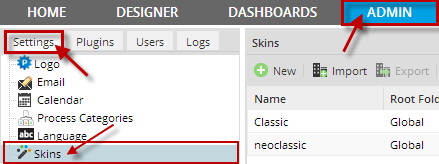
Note: When a skin is changed it will be visible ONLY for the current browser and workspace where user applied it.
Available Skins
To see a list of available skins installed in ProcessMaker, go to ADMIN > Settings > Skins. All available skins created for the current ProcessMaker Installation will be listed. From version 2.0 Green and Orange skins were removed form the list of available skins.

Skin menu on versions 2.0.45 and previous doesn't show which skin the workspace was using. However, from version 2.5 the skin used is displaying with an italic bold text and set a checked image in the current skin row.
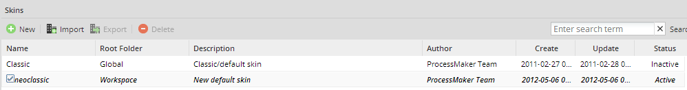
Available skins used in version 2.5.x:
Classic Skin
This skin returns the appearance of ProcessMaker to the classic blue and gray interface. To view this skin simply change the URL direction to:
For example the appearance of the "ADMIN" tab will change to:
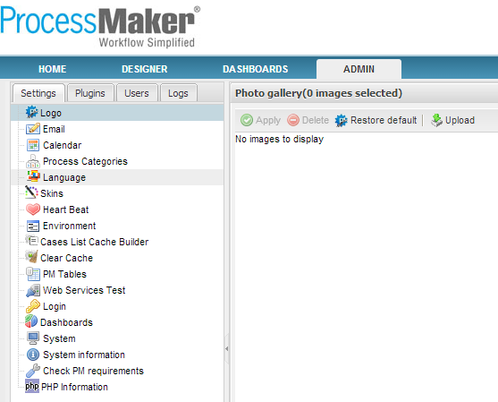
The files defining ProcessMaker's "classic" skin are located in the directory:
Neoclassic Skin
Available Version: From 2.5.1 on.
A new installation uses the default "neoclassic" skin. In addition, the "blank" skin can be used to eliminate the top frame containing the logo and the top-level menu. This skin is designed for production users who only need access to the HOME menu and will be running ProcessMaker on devices with limited screen resolution, such as tablets, netbooks, and some types of smartphones. The "raw" skin can be used for debugging and devices with limited processing power. It doesn't load all the JavaScript libraries, so not all functionality will work correctly with the "raw" skin.
For example, for the ADMIN tab of ProcessMaker, the appearance will be like the following:
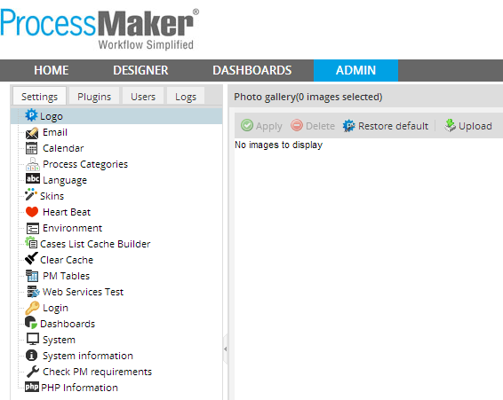
The files defining ProcessMaker's default "neoclassic" skin are located in the directory:
Other Skins
UxModern
Note: This skin was removed from version 2.5.0 because of performance issues.
The elegant “UxModern” skin was presented in version 2.0.40 of ProcessMaker.
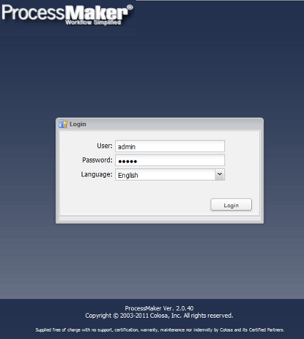
The soft shades of its blue colors and its delicate shape, made this skin more attractive than the others, and offered users a much more friendly interface, with noticeable menu icons and other tools which brought a sense of light working.
Recommendation: This interface was developed in ExtJs language so we strongly recommend to clear cache every time the user would like to make modifications in the Admin menu or when a process is designed.
New Applications
Once the user has logged in, this interface presents the same applications and menus for the user but with new icons:

On the upper side of the screen, in the administrator link, there are three new tabs added for the user with the PROCESSMAKER_ADMIN role:
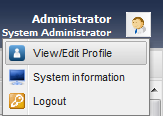
On the contrary for users with PROCESSMAKER_OPERATOR and PROCESSMAKER_MANAGER role, it will display only two options as the show below:
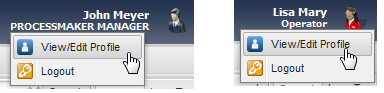
This three tabs as shown. below has the following properties:
Viewing/Editing the profile: Allows view and edit the profile of the user:
A tab named Profile next to the others tabs will appear with the information of the user running the tool

In the bottom of the edit box, will appear the edit button, right click on it and edit the information you need.
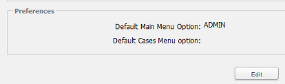
After editing the information and in this case, download a picture of the user, a box with all the new information will appear.
System Information: Shows the system information as it follows:

Shows the system information as it follows
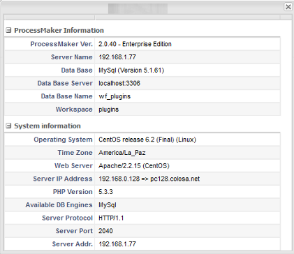
Logout: This last option gives the user the log-out to Processmaker.
Switching tabs
One of the advantages of this new skin is that it preserves the last action made on a tab. For example, if the user was editing a process on the process map and suddenly wants to go back to the Admin tab to modify the information of a user, the Process map tab will keep the data of the changes the user was making at the moment of switching tabs.
Another option is the possibility to close a tab, for example if you open an extra tab like Profile, it will be open as follows:

It will be closed by clicking on the X option on the upper side of the tab.
User Experience Skin
The Simplified User Inbox available from version 2.0.37, as the name suggests, users now have a simplified inbox where they can customize the ProcessMaker interface by changing the interface on the inboxes where appropriate.
The characteristics of this new interface will not stay here, now this application works also on iPhone, Ipad, and Andorid, allowing users to navigate into ProcessMaker from mobile phones, accessing the interface from wherever they are located. Also, users can use this new interface as if they were working from a computer.
There are three types of User experience: Normal, Simplified and Switchable:

- Normal: users can have the normal view of ProcessMaker.
- Simplified: Users can have a simplified view of the ProcessMaker interface, viewing only the inbox where their incoming cases are listed with an overview of the information surrounding the case such as; name and number of the case, person in charge, date of the case, name of the form and the process it belongs to.
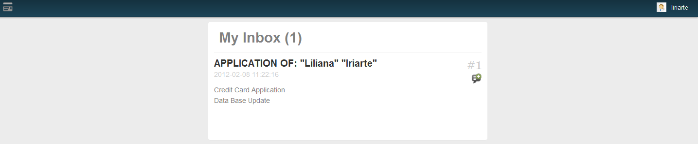
This is very useful because users can only see cases which require further action. By clicking on the name of the Dynaform, it will display the next step allowing users to continue the case:
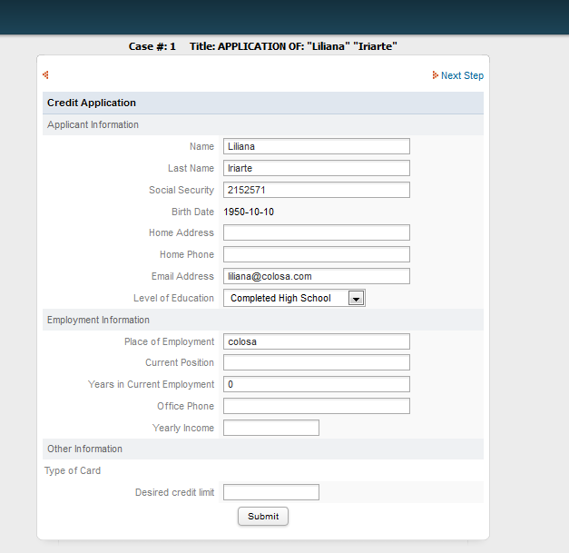
For more information about the use of this skin check this documentation
RTL Skin
Available Version: From 2.0.44 - 2.0.45 on.
Although a RTL language was included on version 2.0.44, on version 2.0.45 ProcessMaker has integrated a skin to have more possibilities to expand the use of RTL Languages inside ProcessMaker.
RTL language will be writing from the right of the page and continues to the left . RTL works with Arabic, Hebrew and Farsi Languages. On the image below, an example of how ProcessMaker looks with the Arabic language:
Login Page:

ProcessMaker Interface:
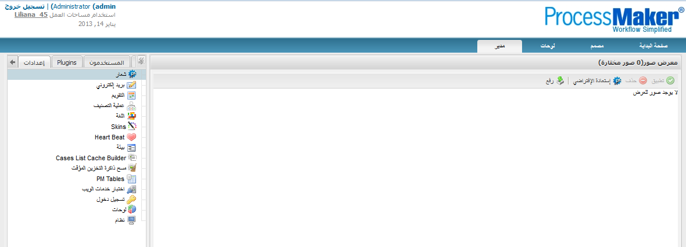
As it was mentioned before, from version 2.0.45, RTL skin was included as a part of the available skins on ProcessMaker, it means that for every style sheet that defines LTR styles (classic, uxmodern, simplified, etc, there should be a corresponding RTL stylesheet (rtl.css).
For example, using the classic skin, its corresponding rtl file will be located at:
Note: It's strongly recommended to clear cache when using RTL Languages to have the skin applied correctly.
Error Skins
Available Version: From 2.5 on.
Sometimes when some URL was not entering correctly an error page was displayed, but message was not too clear to fix the problem. From this version 3 new pages will come up, specifying the error and some possible reasons of the error and some resources which will help users to identify it.
Skin: 404 Not Found
When an URL is not entered correctly, the following skin will display:

Skin: 403 Forbidden Error
If user types an incorrect URL or if the page is prohibited, he will be redirected automatically to the following page:
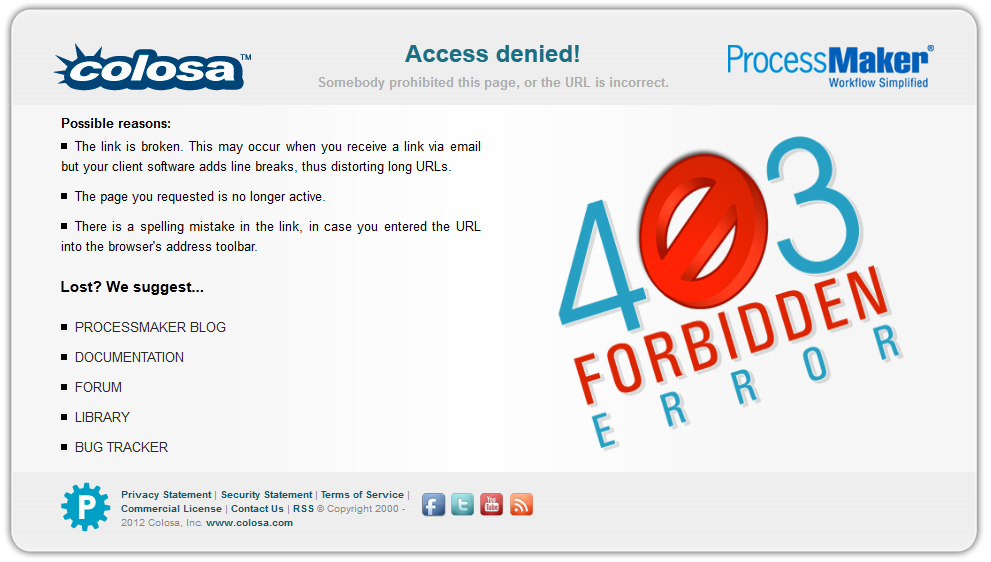
Skin: Websites Under Construction
If for some reasons ProcessMaker is unavailable (Upgrade, server down, etc.) users will be redirected to the following page:
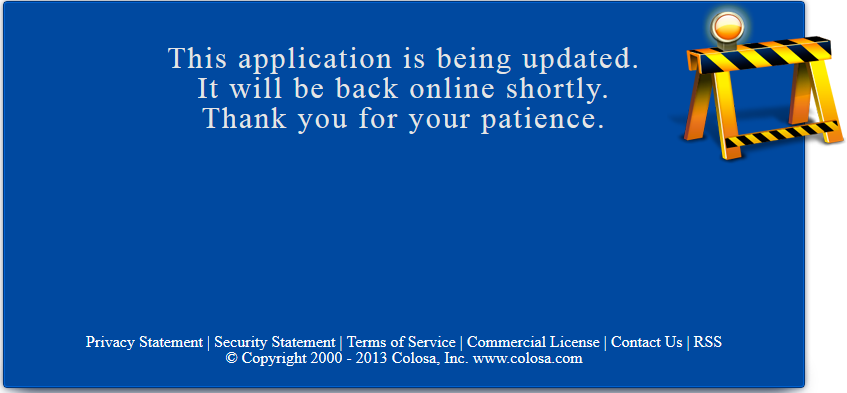
Changing Skins Layout
Available Version: From 2.5.2 on.
The 404 Not Found and 403 Forbidden Error skins can be changed thanks to the addition of the error404.php and updating.php files inside the skin folder. Those files make both skins customized according to the user requirements.
Although both files have a php extension, the most part of the content is HTML code, so following the steps below the procedure to customize them shouldn't be difficult:
1. Go to the path where the skins are located:
Inside you will find error404.php and updating.php files.
2. Let's open the error404.php file and modify the line 23:
to:
Once you changed the line, test it by modifying your ProcessMaker URL, note that you don't need to restart your server to apply changes, so you will see the modification as follows:
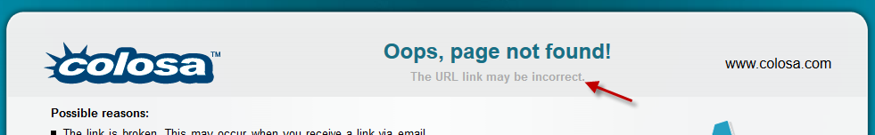
Repeat the same procedure on the same procedure must follow if you want to modify the updating.php file
Note: If you want to make modifications in those skins on previous versions of ProcessMaker (Remember that those skins are available from version 2.5.0) you just have to copy error404.php andupdating.php files inside the corresponding paths where the skins are located.
Changing the skin
Users who would like to change back the classic skin, we recommend to go to System and follow this steps: Go to ADMIN > Settings > System > Preferences and click on the down arrow to view the available skin options. After selecting the skin, save the settings clicking on the Save settings button at the bottom of the page.

A dialog box will appear as below:

And on the left side of the corner on the screen another box will appear informing you that the changes have been saved:

Click on “Yes” and login again to refresh the skin.
Creating Skins
New Skins can be added using either the ProcessMaker Interface or manually creating them inside the file system:
Creating Skins using ProcessMaker interface
Go to ADMIN > Settings > Skins and click on the "New" button:

Note: Each fields indicates if it is a required field with a hint text on them a red underlined.
Where:
- Name: Name of the new skin.
- Folder Name: Folder of the name where all skins files will be located. This field is added automatically with the same name of the skin created, but it is possible to change it; however, if this skin will have further editions, it is recommended to keep both of them with the same name.
- Description: a brief description of the skin.
- Author: name of the person who will create the skin.
- Base Skin: list of all available skins. One of them must be chosen as a base for the creation of the new skin.
Once the information is completed, click on Save button to have the new skin created.
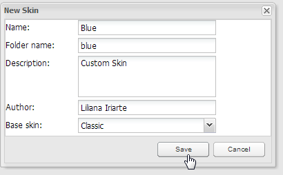
The skin will be created inside the following location:
Then you need to edit the style.css file, to customize DynaForms, texts, etc.
Creating Skins by Workspace
Available Version: From 2.5
When a new skin is created, it has the possibility to be used either by the current workspaces on which is created or by all workspaces created on the server where ProcessMaker has been installed. If users want to configure more than one skin by workspace, they have to modify the config.xml manually, please refer to this documentation to have a more detailed explanation about it.
At the bottom side of the window, where the skins is being creating, two new options were added to choose whether the skin will be available:
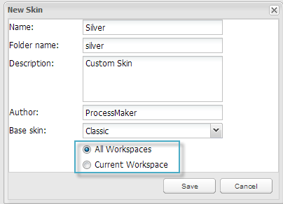
- All Workspaces: Skin will be available for all workspaces created on the current server where ProcessMaker has been installed.
- Current Workspace: Skin will be available ONLY for the current workspace on use.
Creating Skins Manually
New skins can be added to ProcessMaker version 2.0 by manually creating them inside the file system.
The files defining ProcessMaker's default "classic" skin are located in the directory:
<INSTALL-DIRECTORY>/workflow/engine/skinEngine/base
To create a new skin, first create a new directory named skins inside the shared directory.
Linux/UNIX:
Create the skins directory and then set it to use 770 permissions and change its owner and group to the apache user (which is apache:apache in Red Hat/CentOS/Fedora, www-data:www-data in Debian/Ubuntu, and www-run:www in SUSE/OpenSUSE).
Windows:
Open the Windows Files Manager, and navigate to the
After creating the skins directory, copy the default skin's base directory to it and rename it with the name of the new skin. For example, to create a skin named "green":
Linux/UNIX:
Windows:
In the Windows Files Manager, copy the
Remember that skin names are case sensitive, so a skin directory named "GreeN" is different from "green".
Skins have a file structure like:
ProcessMaker can now use the new skin files, but it a good idea to edit the information displayed about the skin in the skin list. Open the shared/skins/skin-name/config.xml file with a plain text editor and edit the values for the <id>, <name>, <description>, <author>, <version>, <createDate> and <modifiedDate> in the <information> section.
For example:
<skinConfiguration>
<information>
<id>00000000000000000000000000000002</id>
<name>Green</name>
<description>Custom Green skin</description>
<author>Amos Batto</author>
<version>1.0</version>
<createDate>2011-04-26</createDate>
<modifiedDate>2011-04-26</modifiedDate>
</information>
The <id> can be any numeric value which is different from 00000000000000000000000000000001, which is used by the "classic" skin.
The config.xml file can also be edited to use different Cascading Style Sheets (CSS) files in the skin.
Importing and Exporting Skins
The Import and Export buttons above the skins list are currently disabled in ProcessMaker until version 2.0.30. If a skin needs to be imported and exported on versions before 2.0.31, simply copy the skin directory and its contents from one installation of ProcessMaker to another. For example, to use scp to copy the "green" skin from the local ProcessMaker installation to another machine running ProcessMaker at the IP address 192.168.1.100:
From version 2.0.31 on it is possible to use Import and Export buttons above the skins list.
By clicking on the "Import" option, a skin created on a different installation or ProcessMaker server could be imported. It has a .tar extension.

By choosing a skin from the list and clicking on the "Export" option, it will be exported on a .tar extension.
Removing Skins
To remove a skin, simply delete the skin's directory. For example, to remove the "green" skin in Linux/UNIX:
From version 2.0.31 it can be removed by ProcessMaker interface, by clicking on the "Delete" option.
Note: Classic skin can't be deleted from the list of available skins, since it is the skin by default on ProcessMaker.
Configuring Skins by Workspace
Available Version: From 2.5 on.
Usually, when different projects are handled on the same server, they are forced to see the list of all available skins used for all workspaces created on that server, even if they use different skins, not giving the possibility to personalize each workspace according to the skins configured to use on each one.
This happens on versions prior to 2.0.45. From version 2.5 it is possible to configure and discriminate skin according to the workspace used.
To configure a skin to be used on a specific workspace, open config.xml file located at:
To use Classic skin:
To use Uxmodern
To use Simplified
To use Single Application:
Find the following code:
<id>00000000000000000000000000000001</id>
<name>Classic</name>
<description>Classic/default skin</description>
<author>ProcessMaker Team</author>
<version>1.0</version>
<createDate>2011-02-27</createDate>
<modifiedDate>2012-01-11</modifiedDate>
</information>
And add the following node with the respective name of the workspace between
If the skin is required to be visible on more than one skin, add on the same node the names of the workspaces separated with | symbol:
For example, if it is required to have the classic skin available only for workflow workspace, other workspaces can't use it, making it unavailable from the skin list an Admin:

Modifying Skins
To modify a ProcessMaker skin, edit the skin's HTML and CSS files which are found in the shared/skins/skin-name directory. Custom image files can also be added to theshared/skins/skin-name/images directory.
HTML Skin Files
The HTML files control the layout and content of a skin. The principal file to edit is layout.html, which is the general layout of the principal ProcessMaker interface.
Variables to be inserted in the HTML code are enclosed inside of {} (Curly braces), such as {$rolename} and {$workspace}. PHP code is enclosed inside of {php}...{/php} tags. To conditionally insert HTML code, either use print statements in PHP code or encode HTML inside of PHP code blocks.
For example, the following code in an HTML file would print out "ADMIN privileges" if the logged in user is the "admin" user:
print "<big><b>ADMIN privileges</b></big><br>";
}else{
print "<big><b>Normal privileges</b></big><br>";
}
{/php}
Any text outside {php}...{/php} tags is considered HTML and will be displayed in the web browser. The same message can be inserted in the HTML code in this manner:
<big><b>ADMIN privileges</b></big><br>
{php}}else{{/php}
<big><b>Normal privileges</b></big><br>
{php}}{/php}
CSS Skin Files
Cascading Style Sheets (CSS) define the appearance of elements in ProcessMaker. The CSS files for the default "classic" skin are located in the following directories:
<INSTALL_DIRECTORY>/workflow/engine/skinEngine/base/css/ <INSTALL_DIRECTORY>/workflow/engine/skinEngine/base/baseCss/
However, it is not recommended to directly edit these CSS files, because upgrading ProcessMaker will overwrite these files and any changes will be lost.
Instead, create a custom ProcessMaker skin and edit the CSS files found in the directories:
Begin by editing the css/style.css file, which is the principal CSS file defining the most common ProcessMaker elements.
Common ProcessMaker Classes
- ProcessMaker header:
- logout: Class for the holding information about the logged in user, workspace, date and a Logout link in the upper right hand corner of the ProcessMaker header.
- title: Class for an empty cell immediately below the cell which holds the user information and Logout link.
- ProcessMaker menu:
- mainMenuBG: Class for the row which holds the ProcessMaker main menu.
- mainMenu: Class for an option in the main menu which is not selected.
- SelectedMenu: Class for an option in the main menu which is not selected.
- DynaForms:
- borderForm: Class for which creates grey border lines with rounded corners around DynaForms and embedded grids.
- content: Class for the holding all the contents of a dynaform. This is inside the with the "borderForm" class.
- boxBottom: Class for the holding the bottom border of DynaForms and embedded grids.
- boxTop: Class for the holding the top border of DynaForms and embedded grids.
- DynaForm Fields:
- FormTitle: Class for the cells (which include the entire row) holding DynaForm titles.
- FormSubTitle: Class for the cells (which include the entire row) holding DynaForm subtitles.
- FormLabel: Class for cells holding the label of DynaForm fields (except for grid field labels).
- FormFieldContent: Class for cells holding DynaForm input fields (such as textboxes, dropdown boxes, radiogroups, etc).
- module_app_input___gray: Class for all <input>, <select>, and <textarea> fields, such as textboxes, dropdown boxes, radiogroups, etc.
- FormCheck: Class for the <span> holding the right hand label for checkboxes and options in a checkgroup.
- FormButton: Class for the cells (which includes the whole row) holding a submit, reset or generic button.
- module_app_button___gray: Class for submit, reset and generic buttons.
- tableOption: Class used for the <a href> of link fields and the cell and anchor for the Next Step link in the upper right hand corner.
- module_app_input___gray_file: Class for file fields (just the <input> box).
- Grids:
- grid: Class for the <div> holding a grid and its borders. Hiding this <div> will hide the entire grid.
- Record: Class holding a separate table at the top of a grid which contains the New link.
- GridLink: Class for the New and Delete links (<a href>) in grids.
- tableGrid: Class for tables holding the content of grids.
- vFormTitle: Class for the cells holding the column headers with the labels for each grid field.
- GridLabel: Class for the cells holding the row numbers in grids.
Modifying CSS for Specific Dynaform elements
For more information about modifying the CSS properties for specific DynaForm elements, see:
To find information about each style property, see the Cascading Style Sheets documentation for Mozilla and Internet Explorer
Editing style.css
As it was mentioned before, the most common properties of ProcessMaker are defined on this file, but it is worth mentioning if styles are changed on it, all places where the object is displaying, will be modified with the new style.
Below, some examples will be explained:
a. .userGroupTitle: it modifies the case title when a case is running.
Modifying color and font values:
{
color :green;
font :bold 14pt Tahoma,sans-serif,MiscFixed;
padding-left :10px;
}
The final view will be:
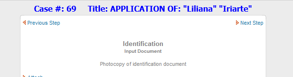
b. form.formDefault .FormFieldContent: it modifies labels for derivation screens, Output and Input document screens:
{
color:#000;
background-color:#EFEFEF;
padding-left:5px;
text-align: left;
background-color:#f9f9f9;
font-size:15px;
}
Modifying font-size attribute:
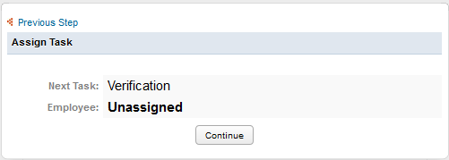
c. form.formDefault .FormTitle: modifies properties of Dynaform Titles.
{
text-shadow:0 1px 0px rgba(255,255,255,1);
font-weight: 700;
color:#FFFFFF;
padding-left:5px;
font-weight:bold;
background:#4092E5;
border-bottom:1px solid #C3D1DF;
}
The above code modifies the background color of the title to Blue and the font color to White, giving the following result:

d. form.formDefault .FormSubTitle:
{
background:#8CBDEE;
color:#000000;
}
The above code modifies the background color of the title to light blue and the font color to black, giving the following result:
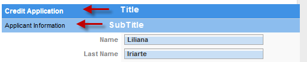
Editing form.css
a. .module_app_input___gray: modifies all input boxes (dropdown, textbox, textarea, etc). form.css
{
padding:1px;
border:5px solid #AAA;
padding-left:3px;
background: #FFFFFF url(/images/classic/input_back.gif) repeat-x;
background-position:0px 0px;
color :#333333;
font :normal 8pt sans-serif;
font-weight: bold;
}
Modifying the background color from #FFFFFF to #C9DFF5, all inputs will change to:
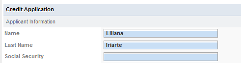
b. .module_app_input___gray_readOnly: modifies all input boxes who are set with a readonly attribute. form.css
Image Files
By default, skins use the images found in the images directory:
- <INSTALL-DIRECTORY>/workflow/public_html/images/
To change the images used in ProcessMaker, simply replace those image files with new files of the same name. However, the images directory will be overwritten each time ProcessMaker isupgraded to a new version, so be prepared to replace the image files after each upgrade.
A better solution is to store the image files inside the shared/skins/skin-name directory, so they won't be overwritten with each upgrade and they can be exported to other installations of ProcessMaker.
First, create an images directory for the skin.
Linux/UNIX:
Create the images directory and then set it to use 770 permissions and change its owner and group to the apache user (which is apache:apache in Red Hat/CentOS/Fedora, www-data:www-data in Debian/Ubuntu, and www-run:www in SUSE/OpenSUSE):
Windows:
Open the Windows Files Manager, and navigate to the <INSTALL-DIRECTORY>/processmaker/shared/skins/skin-name directory. Right click in the directory and select New > Folderfrom the dropdown menu, and then name it "images".
After creating the images directory, then copy image files to the directory.
Referencing Skin Images
To use custom images in a skin, the html files for the skin will have to be edited to add references to the images. Skin images are accessible with the path "/skin/skin-name/images/image-filename".
For example, the default ProcessMaker favicon is replaced with a custom favicon named "mycompany.ico" in the "green" skin. Copy the mycompany.ico file to the <INSTALL-DIRECTORY>/shared/skins/green/images directory. Then, edit the& <INSTALL-DIRECTORY>/shared/skins/green/layout.html file and change line 5 from:
to:
Changing the Logo
The recommended way to set the logo for ProcessMaker is to go to ADMIN > Settings > Logo and select an image. However, the logo image file can be changed directly in the code forlayout.html. For example, to use the image file myLogo.png, change line 15 from:
to:
However, make sure that the logo image file is no more than 50 pixels high, otherwise, it will shove down the interface, so the bottom of the ProcessMaker interface is no longer viewable in the web browser.
Changing the Logo according to the Department
Code can be added to the layout.html file to lookup the department of the logged in user and change the logo based upon the department.
Replace line 15 from layout.html file:
<pre>
<p>with:</p>
<pre lang="php">
<td width="50%" rowspan="2" valign="top"><img src="{php}
$dept = "";
$conn = mysql_connect('localhost:3306', 'root', 'XXXXXXX');
if ($conn) {
mysql_select_db('wf_workflow');
$userId = $_SESSION['USER_LOGGED'];
$result = mysql_query("SELECT DEP_UID FROM USERS WHERE USR_UID='$userId'");
if ($result and ($record = mysql_fetch_array($result, MYSQL_ASSOC)))
$dept = $record['DEP_UID'];
}
if ($dept == '21232f297a57a5a743894a0e4a801fc3')
echo '/skin/green/images/salesDeptLogo.png';
elseif ($dept == '12565951048b858ca883c57091712352')
echo '/skin/green/images/financeDeptLogo.png';
elseif ($dept == '6618999024da862140ae0d3044503042')
echo '/skin/green/images/engineeringDeptLogo.png';
else
echo '/skin/green/images/defaultLogo.png';
{/php}"/></td>
Modifying Loading Page View
Available Version: From 2.5.0 on.
It is possible to customize the loading page which is displaying when ProcessMaker is starting a session. You can change the logo and the message displaying to an animated logo of your Company.
In order to customize the login screen the extJsInitLoad.html file was added inside the following location:
- <INSTALL-DIRECTORY>/workflow/engine/skinEngine/base
This contains files for the Classic skin. If a skin, different from classic, needs to have the loading page customized, copy this file inside the skin folder required. This file is also applicable on versions previous to 2.0.46 by copying it to the skin folder required.
In the first part of the file, CSS styles can be modified, while in the second part images and text can be personalized:
Changing the loading page images
The spinning gears and the ProcessMaker logo may be replaced. Upload a new image to the following directory:
- <INSTALL-DIRECTORY>/workflow/public_html/images/
Then edit the workflow/engine/skinEngine/SKIN-NAME/extJsInitLoad.html file with a plain text editor and set it to use the new image file. For example, to replace the default image with a custom bluegears.gif, change the following line from:
To:
Then, the ProcessMaker loading page will be:

Personalizing text
While ProcessMaker is loading, some texts are displaying, they indicate which components are loading. Those text can also be modified:
<script type='text/javascript' src='/js/ext/ext-base.js'></script>
<script type="text/javascript">document.getElementById('loading-msg').innerHTML = 'Loading UI Components...';</script>
<script type='text/javascript' src='/js/ext/ext-all.js'></script>
<script type="text/javascript">document.getElementById('loading-msg').innerHTML = 'Loading UI Extensions';</script>
....
<script type="text/javascript">document.getElementById('loading-msg').innerHTML = 'Initializing...';</script>
For instance, replacing Initializing text to Initializing ProcessMaker, loading page will be:
Switching to a Different Skin
The default skin used by ProcessMaker can be set in the System interface or by editing the env.ini configuration file. This setting will set the skin at the login screen, however, the user is free to edit the URL in the web browser to change the skin.
The skin to be used by ProcessMaker is specified in the URL when accessing ProcessMaker through the web browser. The template for ProcessMaker URLs is:
To switch to a different skin, simply change the URL in the web browser. The skin can be changed at any time when using ProcessMaker by editing the URL then pressing ENTER to refresh.
For example, while looking at the cases list, the default "classic" skin can be change to the custom "green" skin by changing the URL from:
To:
If just the domain name or IP address is specified in the URL, then the web browser will be redirected to use the "classic" skin for the login screen. For example, the address http://192.168.1.100 is redirected to http://192.168.1.100/sys/en/classic/login/login
To make ProcessMaker redirect automatically to another skin other than "classic", edit the file workflow/public_html/index.html to specify another skin. It can generally be found at:
- Linux/UNIX:
/opt/processmaker/workflow/public_html/index.html
- Windows:
<INSTALL-DIRECTORY>\processmaker\workflow\public_html\index.html
Change the skin in the line:
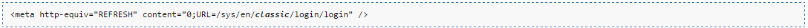
Note: These changes to the source code will be overwritten each time ProcessMaker is upgraded, so they will have to be reapplied after each upgrade.
Forcing ProcessMaker to use a Skin
If needing to prevent users from changing the skin by editing the URL in the web browser, add the JavaScript code listed below to force users to always use a certain skin.
Changing the skin in the login redirector will only work if the user enters just the domain name or IP address. To force ProcessMaker to always use a skin at the login screen, edit the JavaScript code in the workflow/engine/xmlform/login/login.xml file. Add code to redirect the login screen to a different skin when the page loads.
Change the lines from:
setFocus (getField ('USR_USERNAME'));
to:
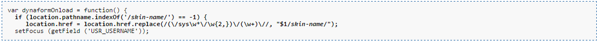
change skin-name to the name of a skin installed on the system, such as the default classic or a custom skin like companySkin.
Also edit the JavaScript code in the workflow/engine/xmlform/login/sysLogin.xml file.
Change the lines from:
setFocus (getField ('USR_USERNAME'));
to:
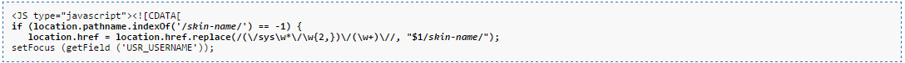